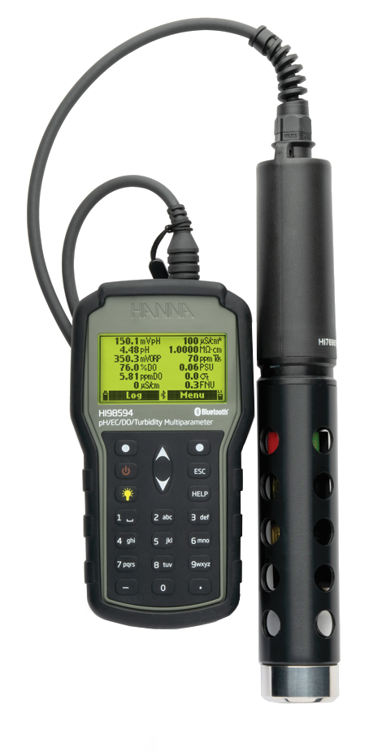

HANNA HI98594 Multiparametric Probe

| HANNA HI98594 Probe | |
|---|---|
| Location: | Lab. 1.87 Building 7 |
| Manager: | Margarida Ramires |
| Operator: | User |
| Working Principle: | Sensors |
| Manufacturer: | HANNA Instruments |
| Model: | HI98594 |
| Type: | Multiarametric Probe |
| Website: | HANNA Instruments |
The HANNA HI98594 Multiparameter Water Quality Meter is a portable multiparameter monitoring system developed for rapid and accurate assessment of water quality in natural and laboratory environments. The equipment combines a robust portable meter with a multiparameter probe with replaceable sensors, allowing the simultaneous determination of several essential physicochemical parameters for environmental studies, coastal monitoring, limnology, aquaculture, and water resource management.
The probe integrates digital sensors for pH, oxidation-reduction potential (ORP), optical dissolved oxygen (ODB), electrical conductivity, salinity, total dissolved solids (TDS), resistivity, turbidity, and temperature, also calculating derived parameters such as seawater density (Sigma). The modular architecture allows for sensor replacement directly in the field, simplifying maintenance and reducing equipment downtime.
The HI98594 incorporates an internal barometer for automatic compensation of dissolved oxygen measurements, as well as automatic temperature compensation for electrochemical parameters. The system also features internal memory for storing measurements, Bluetooth® communication with mobile devices via the Hanna Lab app, a USB connection for data transfer, and remote firmware updates.
The meter features IP67 protection, while the multiparameter probe has an IP68 rating, allowing its use in demanding field environments. The hybrid power system, which combines a rechargeable lithium-ion battery with backup alkaline batteries, provides high autonomy during extended campaigns.
Calendar / Availabillity
RequestMain Applications
- Water quality monitorization;
- Oceanographic studies;
- Aquatic ecosystems evaluation;
- Limnologic studies;
- Environmental impact evaluation;
- Field campaigns;
- Continuous monitorization in buoys and platforms;
Sample Types
- Seawater;
- Estuarine water;
- Fresh water;
Main Advantages:
- Simultaneous measurement of multiple physico-chemical parameters;
- Replaceable digital probes directly in the field;
- Dissolved oxygen optic sensor with low maintenance;
- Integrated barometer for automatic dissolved oxygen compensation;
- Automatic temperature compensation;
- Internal data logging;
- Bluetooth® communication with mobile devices;
- CSV file format data exportation;
- Sensor with IP67 and IP68 protection;
- Hybrid power supply for longer field autonomy
- Intuitive interface with integrated tutorial for calibration and maintenance;
Probes:
| Probe | State |
|---|---|
| Temperature | Installed |
| Condutivity | Installed |
| Salinity | Installed |
| Dissolved Oxygen (Optical) | Installed |
| pH | Installed |
| ORP (Redox Potential) | Installed |
| Turbidity | Installed |
| Total Dissolved Solids (TDS) | Installed |
| Resistivity | Installed |
| Seawater Density (Sigma) | Installed |
Technical Specifications:
| Specification | Value |
|---|---|
| Manufacturer | HANNA Instruments |
| Model | HI98594 |
| Software | HANNA Lab App |
| Probes number | Up to 12 parameters measured simultaneously |
| Automatic Temperature Compensation | Yes |
| Max. Depth | 250 meters |
| Internal Memory | Aprox. 45 000 entries |
| Data Logging | Yes |
| Aquisition Interval | Configurable (1 s to 3 h) |
| User Calibration | Yes |